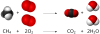

product

Definition: Products are the species formed from chemical reactions. During a chemical reaction, reactants are transformed into products after passing through a high energy transition state. This process results in the consumption of the reactants. It can be a spontaneous reaction or mediated by catalysts which lower the energy of the transition state, and by solvents which provide the chemical environment necessary for the reaction to take place. When represented in chemical equations, products are by convention drawn on the right-hand side, even in the case of reversible reactions. The properties of products such as their energies help determine several characteristics of a chemical reaction, such as whether the reaction is exergonic or endergonic. Additionally, the properties of a product can make it easier to extract and purify following a chemical reaction, especially if the product has a different state of matter than the reactants.
Source: Wikipedia
Wikipedia Page (Something wrong with this association? Let us know.)
Wikidata Page (Something wrong with this association? Let us know.)